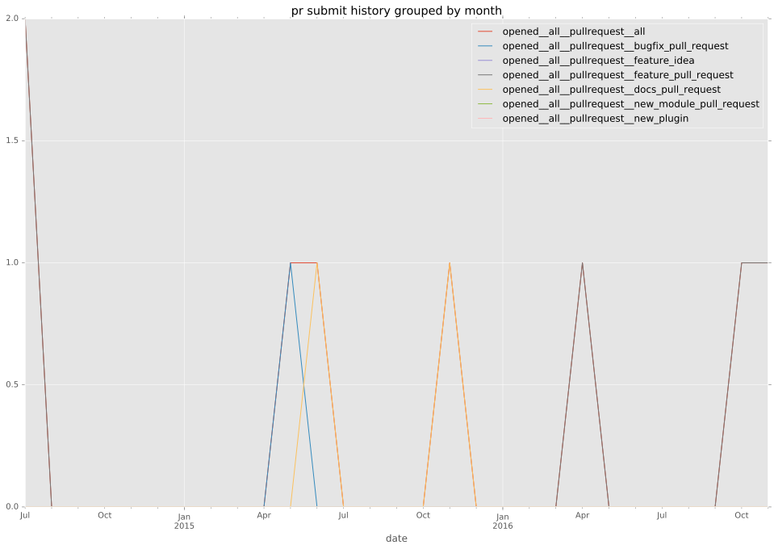
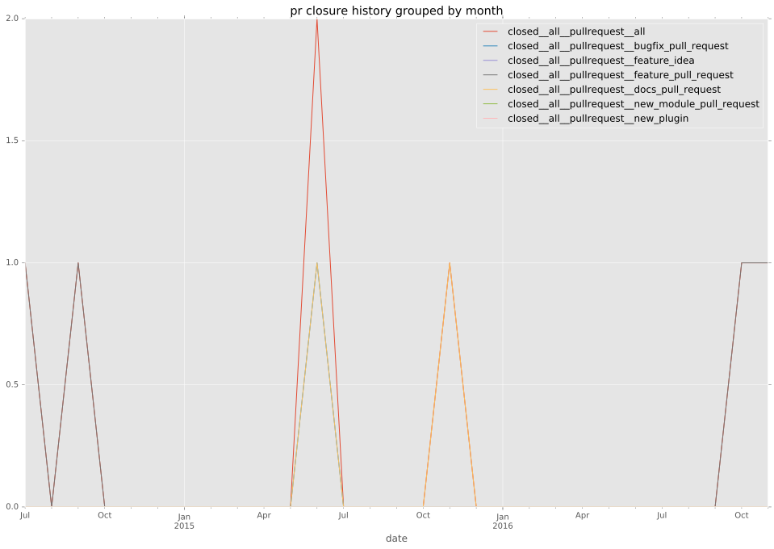

authors
- jhawkesworth
maintainers
- jhawkesworth
contributors
- jhawkesworth : 19 commits
- jimi-c : 19 commits
total issue counts
feature pull request: 2
pullrequest: 10
docs pull request: 2
bugfix pull request: 5
issue: 5
new plugin: 1
bug report: 5
issue history

pullrequest history


days open by issue type
bugfix pull request
count: 10
std: 5.18116246073
min: 0
max: 12
median: 0.0
mean: 3.8
all
count: 23
std: 45.7062281154
min: 0
max: 217
median: 4.0
mean: 16.1739130435
pullrequest
count: 0
std: nan
min: nan
max: nan
median: nan
mean: nan
docs pull request
count: 4
std: 2.88675134595
min: 0
max: 5
median: 2.5
mean: 2.5
feature pull request
count: 2
std: 43.1335136524
min: 0
max: 61
median: 30.5
mean: 30.5
issue
count: 0
std: nan
min: nan
max: nan
median: nan
mean: nan
new plugin
count: 2
std: 0.0
min: 6
max: 6
median: 6.0
mean: 6.0
bug report
count: 5
std: 93.7373991532
min: 1
max: 217
median: 4.0
mean: 50.2
closures grouped by total days open